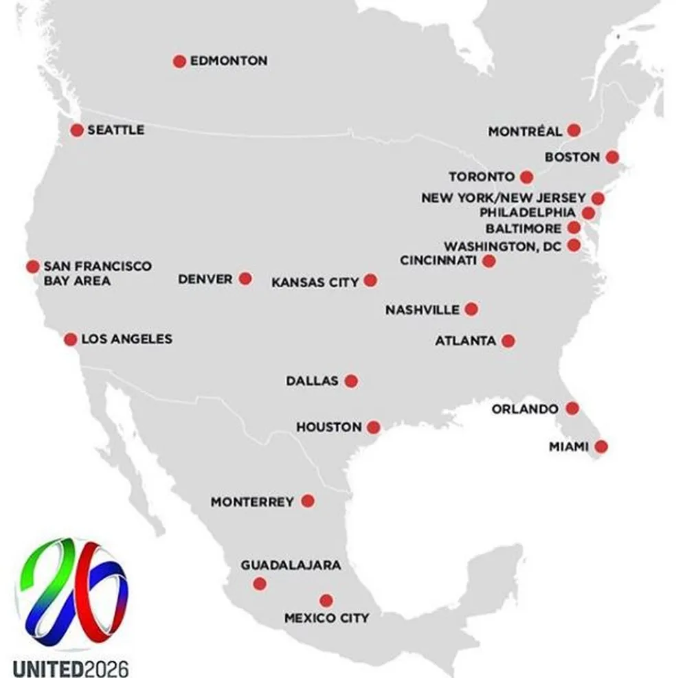

A final

A grande final foi disputada em 19 de julho de 2026, no Metlife Stadium, em East Rutherford, Nova Jersey.
Pela primeira vez na história, a final da Copa teve um show no intervalo.
Voltar para a página principal

A copa de 2026 foi disputada em 16 cidades de três países diferentes.
O país sede recebeu a amior parte dos jogos, em 11 cidades de três paises diferentes.
Todos os jogos a patir das quartas de final foram disputados nos Estados Unidos.
Voltar ao topoO Estádio Asteca, na Cidade do México, recebeu a partida de abertura em 11 de junho.
Voltar ao topo
A grande final foi disputada em 19 de julho de 2026, no Metlife Stadium, em East Rutherford, Nova Jersey.
Pela primeira vez na história, a final da Copa teve um show no intervalo.